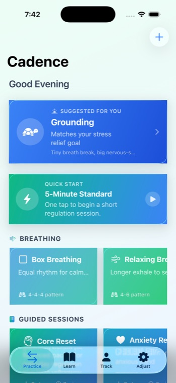
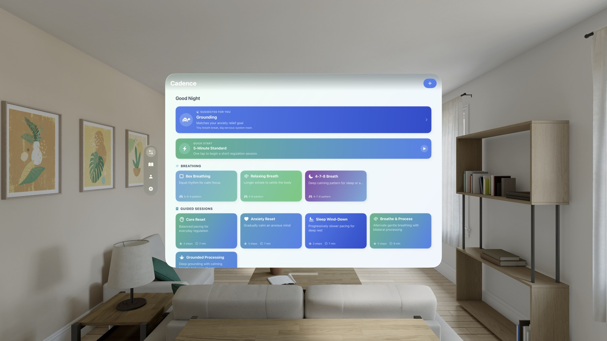

A left-right cue creates a simple rhythm
Tracking movement across the screen gives your attention a simple, repeatable task to follow.
BILATERAL STIMULATION APP FOR IOS
Cadence pairs bilateral stimulation with guided breathwork for quick daily sessions and longer focused practice.

How It Works
Alternating left-right cues create a simple visual rhythm that pairs naturally with breathwork.
Tracking movement across the screen gives your attention a simple, repeatable task to follow.
A consistent pace creates a predictable pattern that is straightforward to follow during a session.
Adding structured breathing to bilateral stimulation gives two simple patterns to follow at once.
Features
Cadence keeps the setup quick and the feedback useful.
Presets
Jump into wind-down, focus, energizing, or custom sessions in just a few taps.
Guided
Move from bilateral stimulation into structured breathing without leaving the session flow.
Tracking
Track calm shifts, streaks, and notes so useful patterns are easier to spot over time.
Private
Use Cadence without an account, with optional Mindful Minutes logging when you want it.
Across Your Devices
Use Cadence for quick resets on iPhone, longer sessions on iPad, and a more spacious practice view on Vision Pro.

In Action
Start with the practice screen, move into live sessions, then review and tune the app.
Get Cadence
Download Cadence and start building a daily practice.